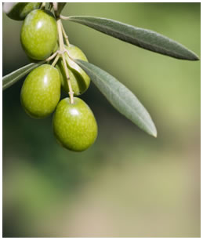

Información del proyecto
Introducción
La superficie de olivo en la isla de Mallorca supera las 2.200 ha, que en el año 2006 produjeron una cantidad de oliva que permitió realizar 90.899 litros de aceite calificado por la Denominación de Origen Aceite de Mallorca. Existen 6 almazaras y 7 embotelladores que permiten dar servicio a las más de 400 empresas productoras de aceituna. Las expectativas de futuro prevén un crecimiento sostenido de la producción en los próximos años y un aumento paulatino de la exportación de aceite a escala nacional e internacional.
El Reglamento (CE) nº 178/2002 del Parlamento Europeo y del Consejo, por el que se establecen los principios y requisitos generales de la legislación alimentaria, en su artículo 18, introduce, por primera vez con carácter horizontal, para todas las empresas alimentarias y de piensos, la exigencia de disponer a partir del 1 de enero de 2005 de un sistema de trazabilidad "de los alimentos, los piensos, los animales destinados a la producción de alimentos y de cualquier otra sustancia destinada a ser incorporada en un alimento o un pienso, o con probabilidad de serlo".
Así, cada empresa deberá disponer de un sistema de gestión documental que permita identificar y realizar un seguimiento de los productos que entran, permanecen y salen en su negocio de forma ágil, rápida y eficaz, con el fin de que ante una pérdida de seguridad del producto puedan adoptarse las medidas necesarias.
Por otra parte, el hecho de la creación en el año 2002 de la denominación de origen Aceite de Mallorca obliga, según el reglamento de las empresas productoras de oliva y de las productoras de aceite, a mantener todo un conjunto de registros con el objetivo de permitir, tanto al consejo regulador del aceite como a la administración autonómica, la verificación del cumplimiento de todos los requisitos establecidos en el reglamento pertinente para la obtención de la marca.
Actualmente las empresas que participan en el proceso de producción del aceite utilizan un sistema de trazabilidad y registro manual, basado en diferentes libros que deben ir cumplimentando, lo que implica un consumo importante de tiempo y la posible generación de errores en la introducción de los datos en los libros. Además, en muchos casos, se duplica gran parte de la información introducida puesto que deben hacerse declaraciones de producción a diferentes entidades responsables, como el Consejo Regulador o la Conselleria de Agricultura del Govern de les Illes Balears.
Asimismo la realización de inspecciones por parte de estas entidades responsables resulta especialmente laboriosa ya que se debe seguir todo el proceso manualmente e in situ, dado que no se tiene acceso a los libros hasta que no se llega físicamente a las almazaras. Todo ello conlleva que la realización de estas inspecciones sea excesivamente lenta, con el consiguiente perjuicio tanto para las empresas como las entidades inspectoras.